Using Cursor with Cloudera AI (Remote SSH)¶
This guide explains how to connect Cursor IDE to your Cloudera AI workbench session using Remote SSH and the cdswctl CLI, enabling AI-assisted coding directly against your project environment.
Prerequisites¶
Before connecting, ensure you have:
- [x] Completed Login & Workbench Setup
- [x] Created your team project
- [x] Cursor IDE installed on your local machine (cursor.com)
One-time Setup¶
1. Generate an SSH Key¶
Run the following command to generate a new SSH key pair:
When prompted "Enter file in which to save the key", type cai (this creates the key in your current directory rather than the default location).
Press Enter to skip the passphrase prompts (leave both empty).
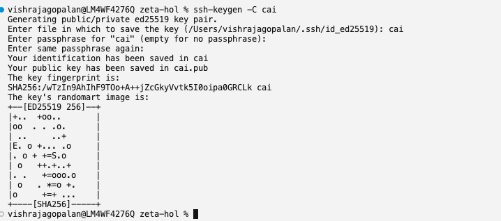
2. Move the Keys to ~/.ssh/¶
If the ~/.ssh/ directory does not exist yet (common on a new machine), create it first:
Move the generated private and public key files into your SSH directory:
Verify the keys are no longer in your current directory:
You should see ~/.ssh/cai (private key) and ~/.ssh/cai.pub (public key).
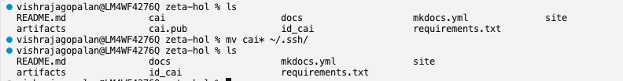
3. Copy the Public Key¶
Copy the entire output line.
4. Add the Key to the Workbench¶
In the Cloudera AI Workbench, go to User Settings → Keys & Access → Remote Editing, paste your public key into SSH Public Key, and click Add.
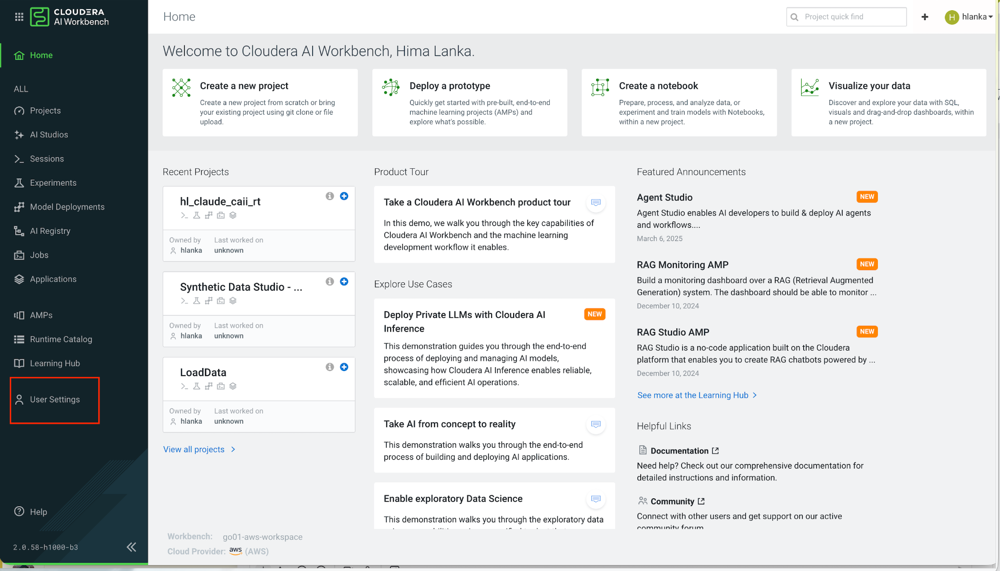
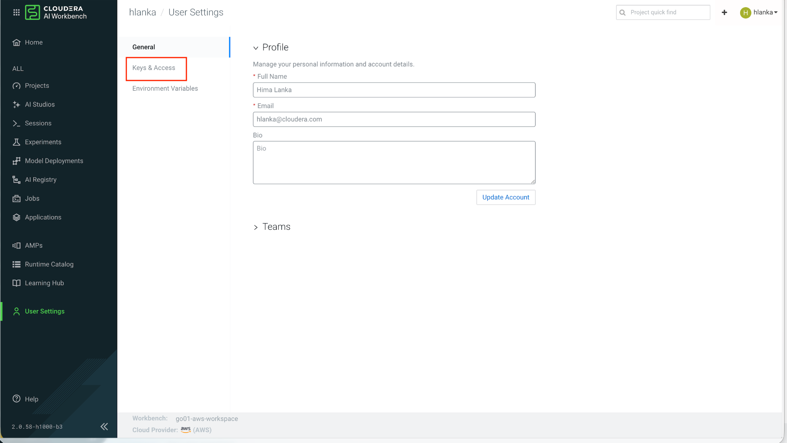
While you are on the Remote Editing page, note that the CML CLI client (cdswctl) can be downloaded for your operating system — you will do this in the next step.
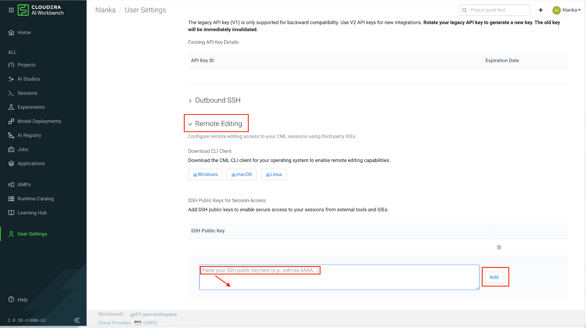
5. Download and Unblock the CML CLI Client¶
Download the CML CLI client (cdswctl) for your operating system from the Remote Editing section shown in step 4.
Unpack the downloaded archive. You should have a folder containing the cdswctl binary (for example, cdsw-2.0.0.95880-darwin-amd64 on Mac).
Mac: Allow cdswctl to Run¶
macOS quarantines downloaded files and will not let you run cdswctl directly from the terminal on first use. When you try, you may see a dialog like this — click Done (do not click Move to Bin):
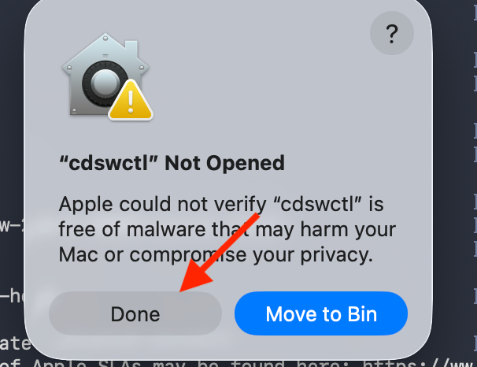
Then allow the binary manually:
- Open System Settings → Privacy & Security → Security
- Scroll down until you see a message that
"cdswctl" was blockedto protect your Mac - Click Allow Anyway
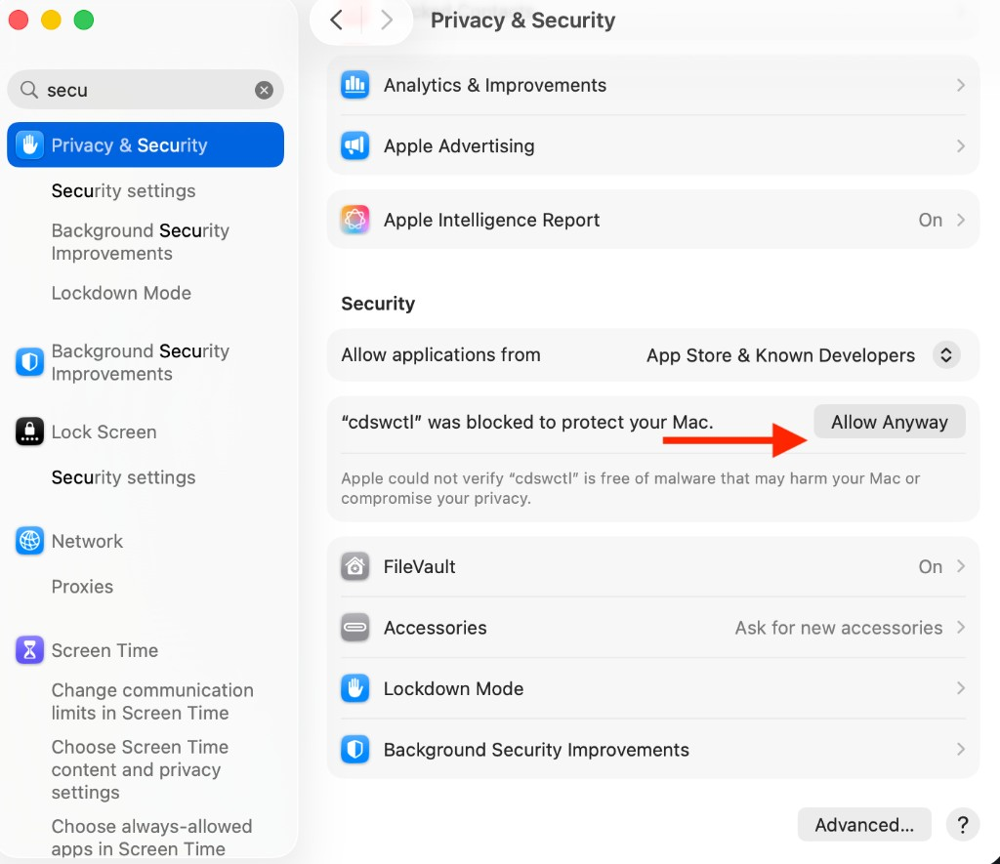
- Run
cdswctlonce more from the terminal — macOS may ask you to confirm again; choose Open
Alternative: Remove Quarantine via Terminal
If the Allow Anyway button does not appear, you can remove the quarantine flag manually:
6. Add cdswctl to Your PATH¶
Add the folder containing cdswctl to your shell PATH so you can run it from any directory.
Get the Path to cdswctl¶
In your terminal, change into the folder where you unpacked cdswctl, then print the full path:
Copy the output — you will use it in the steps below. The folder name will look something like cdsw-2.0.0.95880-darwin-amd64.
Verify cdswctl is in that folder:
Mac (zsh)¶
1. Create ~/.zshrc if it does not exist
2. Open the file to add your PATH
Open it in TextEdit for easy editing:
Alternatively, edit in the terminal with nano ~/.zshrc.
3. Add your PATH variable
Paste the following line at the end of the file, replacing the path with the output from pwd above:
Save the file (Cmd+S) and close it.
4. Load the updated PATH
5. Verify
You should see the cdswctl usage output without a "command not found" error.
Mac Apple Silicon: bad CPU type in executable
If cdswctl --help returns:
The downloaded binary is Intel-only and your Mac needs Rosetta. Install it (one-time):
Then rerun:
This step is only needed if you see the bad CPU type error above.
Windows (PowerShell)¶
1. Get the folder path
In PowerShell, navigate to the unpacked folder and print the path:
Copy the output path.
2. Add to your user PATH permanently
Replace the path below with your copied path:
[Environment]::SetEnvironmentVariable(
"Path",
$env:Path + ";C:\Users\<username>\Downloads\cdsw-2.0.0.xxxxx-windows-amd64",
"User"
)
3. Restart your terminal, then verify:
Windows GUI Alternative
You can also add the folder via Settings → System → About → Advanced system settings → Environment Variables, then edit the User variable Path and add the folder containing cdswctl.exe.
7. Create an API Key¶
In the Cloudera AI Workbench, go to User Settings → Keys & Access → API Keys and click Create API Key.
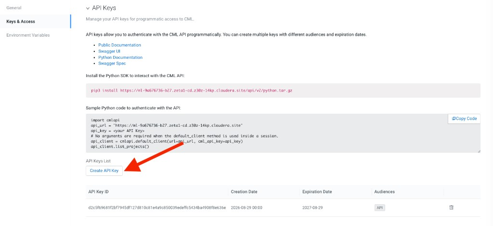
In the confirmation dialog, accept the default expiry settings (ensure API is checked under Audiences) and click Create.
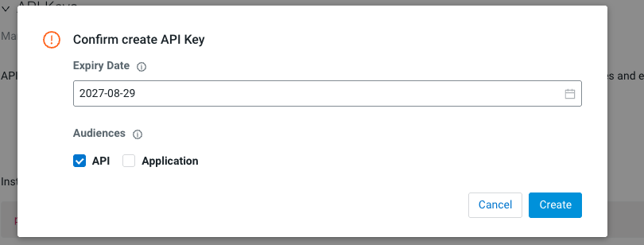
Save Your API Key Immediately
API keys are ephemeral — they are shown only once. Copy the generated API key and save it in a notepad or password manager. You will need this key every time you log in with cdswctl.
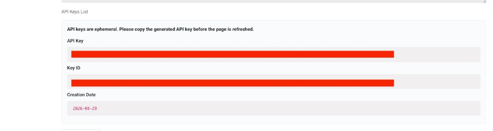
8. Create the SSH Config Entry¶
Add the following entry to ~/.ssh/config:
Host cai-workbench
HostName localhost
Port 3735
User cdsw
IdentityFile ~/.ssh/cai
StrictHostKeyChecking no
ServerAliveInterval 60
ServerAliveCountMax 10
Port Changes Each Session
The Port value will need updating each session — see step 4 under Every-session Steps below.
Every-session Steps¶
1. Log In to CAI Workbench Remotely¶
Use the API key you saved in your notepad during one-time setup:
cdswctl login -u https://ml-9a676736-b27.zeta1-cd.z30z-14kp.cloudera.site -n <username> -y <api key you copied in notepad>
Replace <username> with your Cloudera AI username and paste the API key you saved earlier.
If Mac still blocks cdswctl, revisit step 5 — Allow cdswctl to Run in the one-time setup.
Wait for "Login succeeded."
2. Start the Endpoint¶
Spin up a session with the following command:
Replace <your-user-name/your-project-name> with your actual username and project name (e.g., vishrajagopalan/test). It takes a minute or two for the session to start.
You can verify from the CAI Workbench Project → Sessions tab that the new session has been created.
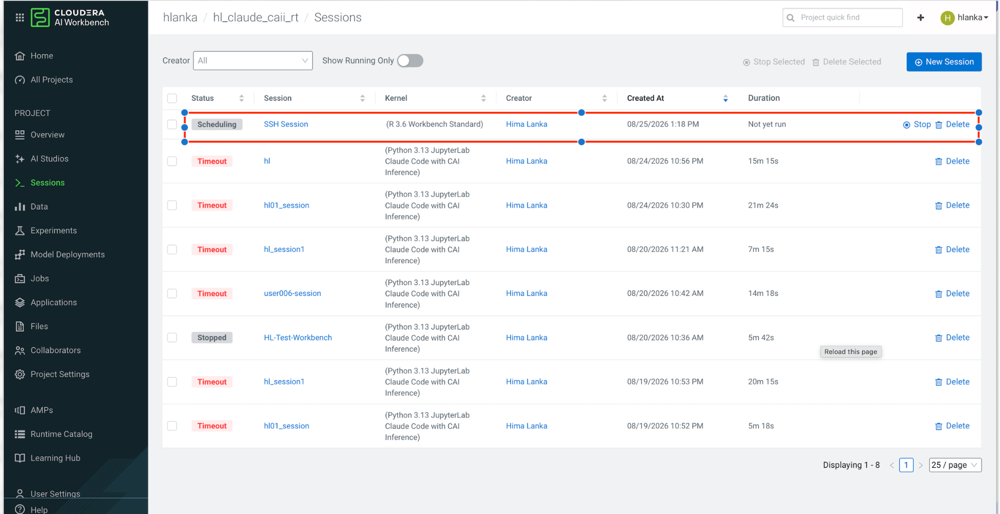
3. Read the Port¶
The command prints connection details:
Leave this terminal open — this process is the tunnel.
4. Update the Port in SSH Config¶
If <PORT> differs from what is saved in ~/.ssh/config (it changes every session), edit the Port line under cai-workbench to match.
Open ~/.ssh/config using any of these commands on Mac:
Update the Port value under the Host cai-workbench block to the <PORT> number printed in step 3.
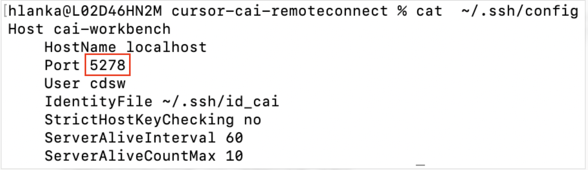
5. Sanity Check (Optional)¶
In a second terminal:
Run whoami — it should return <username>. Type exit to leave.
6. Connect in Cursor¶
- Press Cmd+Shift+P (Mac) or Ctrl+Shift+P (Windows/Linux)
- Select Connect via SSH: Connect to Host
- Choose
cai-workbench - Enter your key passphrase if prompted
- File → Open Folder →
/home/cdsw
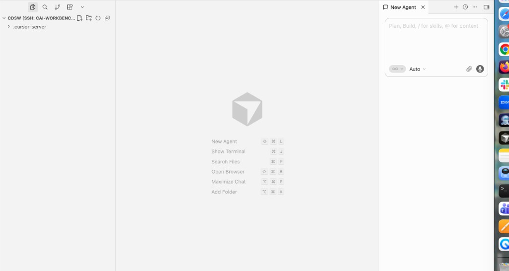
Your SSH connection to the CAI session is ready for use in Cursor.
7. Shut Down When Done¶
Press Ctrl+C in the cdswctl terminal to shut down the session and stop consuming workbench resources.
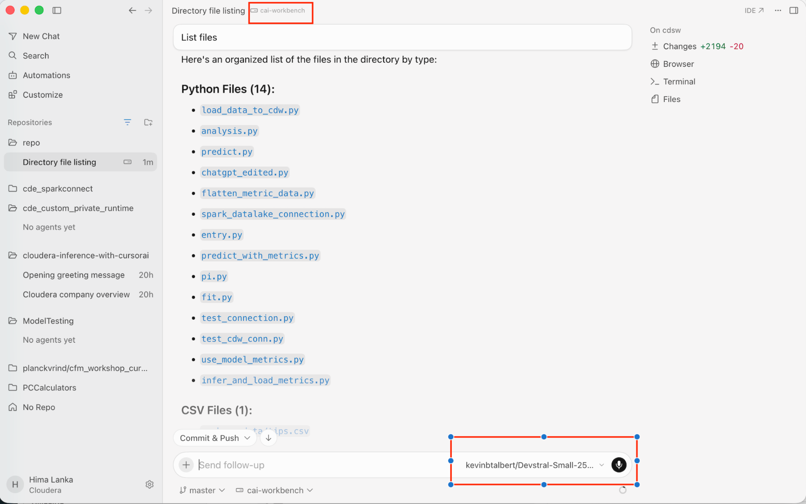
Testing Cursor¶
Once connected to your Cloudera AI project via Remote SSH, you can verify that Cursor works end-to-end by asking the AI Agent to build a sample machine learning pipeline that reads from and writes to the DataLake.
1. Open the Agent Window¶
In the Cursor window connected to your remote Cloudera project, press Cmd+L (Mac) or Ctrl+L (Windows/Linux) to start a New Agent window.
2. Enter the Test Prompt¶
Copy and paste the following prompt into the Agent window:
ROLE : You are an expert Python .
CONTEXT: Your goal is to build a sample ML Pipeline on a customer user case
INSTRUCTIONS :
1. Create a sample dataset that will be helpful in predicting customer churn
2. Insert that data into a table. Here is a sample way to connect to the datalake
import cml.data_v1 as cmldata
CONNECTION_NAME = "default-impala-aws"
conn = cmldata.get_connection(CONNECTION_NAME)
## Sample Usage to get pandas data frame
EXAMPLE_SQL_QUERY = "show databases"
dataframe = conn.get_pandas_dataframe(EXAMPLE_SQL_QUERY)
print(dataframe)
# Closing the connection
conn.close()
## Other Usage Notes:
## Alternate Sample Usage to provide different credentials as optional parameters
#conn = cmldata.get_connection(
# CONNECTION_NAME, {"USERNAME": "someuser", "PASSWORD": "somepassword"}
#)
## Alternate Sample Usage to get DB API Connection interface
#db_conn = conn.get_base_connection()
## Alternate Sample Usage to get DB API Cursor interface
#db_cursor = conn.get_cursor()
#db_cursor.execute(EXAMPLE_SQL_QUERY)
#for row in db_cursor:
# print(row)
3. Now use this data to build a sample customer churn model with scikitlearn
4. Use unseen data build customer churn
FINAL INSTRUCTIONS: Create a Ipython notebook, with good documentation to show my users how this whole process has worked out.
OUTCOME EXPECTED :
An Ipython Notebook which shows a classical Machine Learning Pipeline with data stored in the DataLake, by ingesting, transforming and then predicting customer churn
Let me know if you have any questions. Also test whether you are able to create a dummy table and insert some sample rows before you begin this task.
This May Take a Few Minutes
Cursor will plan and evaluate options before generating the notebook. You may be asked for permissions to run code and save files — approve these prompts to allow the Agent to proceed.
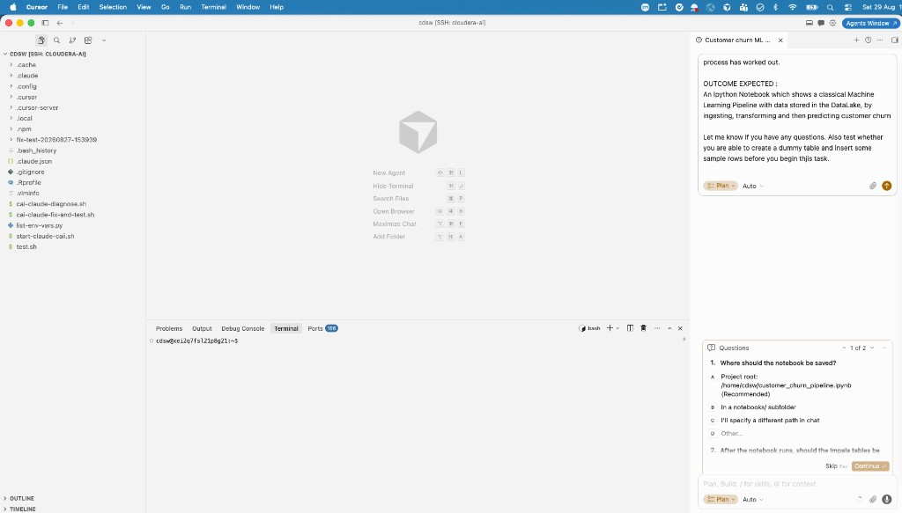
3. Review the Generated Notebook¶
When the Agent finishes, it creates an IPython notebook (typically customer_churn_pipeline.ipynb) in your project directory. Your output should look similar to this sample notebook generated by Cursor — download or open it to explore the full pipeline before running your own.
The notebook demonstrates a full ML pipeline:
- Generates a synthetic customer churn dataset
- Loads the data into the DataLake (Impala) via
cml.data_v1 - Ingests training data back from the lake
- Trains a scikit-learn model with proper feature preprocessing
- Predicts churn on unseen holdout customers
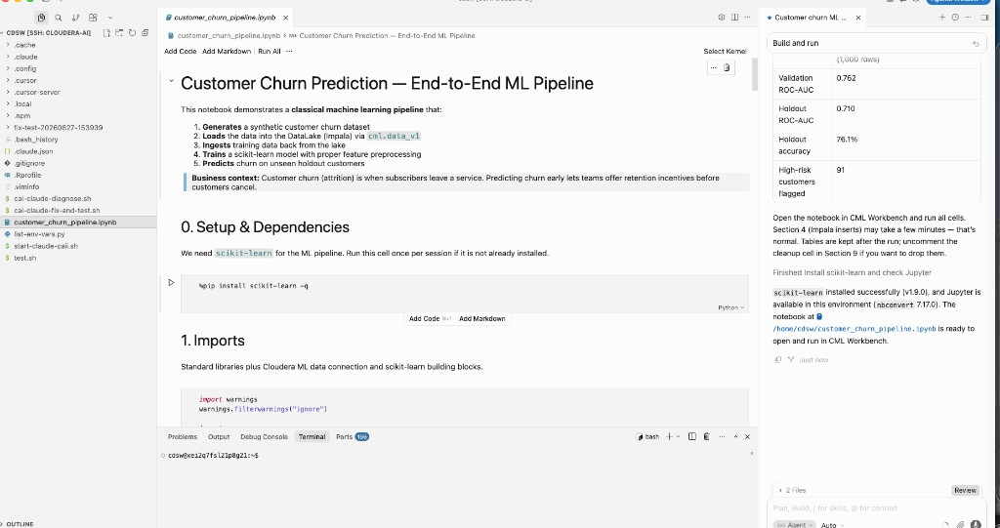
4. Run and Verify the Notebook¶
Open customer_churn_pipeline.ipynb in Cursor and run the cells sequentially. The notebook installs scikit-learn if needed, creates tables in Impala, trains a model, and reports metrics such as ROC-AUC and accuracy on holdout data.
Compare your results against the sample notebook included in this documentation site, or browse it on GitHub at artifacts/customer_churn_pipeline.ipynb.
Section 4 (Impala inserts) may take a few minutes to complete.
Alternative: Claude CLI¶
If you prefer working entirely in the browser without Remote SSH, see Claude with Private Model for using the Claude CLI directly in the workbench terminal.